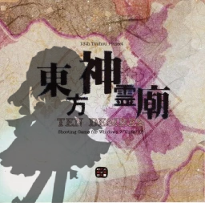
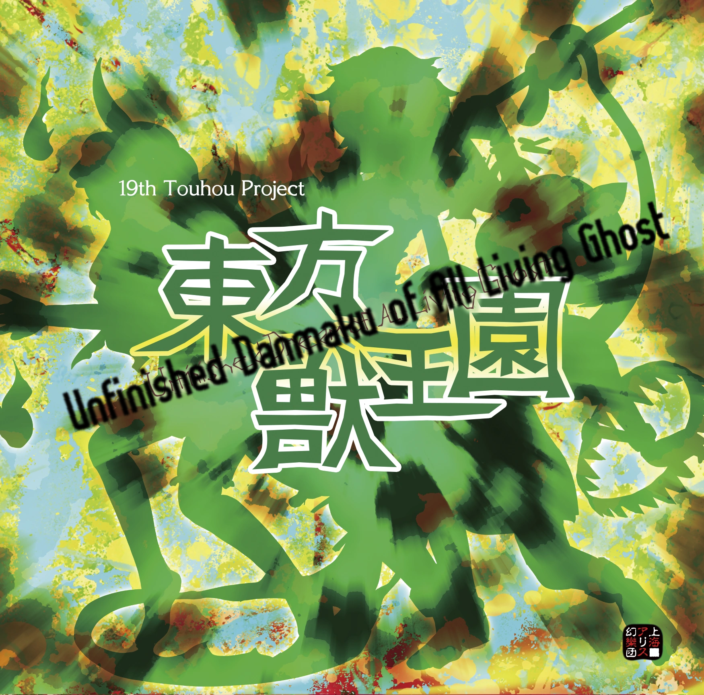

Here are the main pojects/the projects im working now
This mod make Suzumi Kuzu From Len'en is on Ten desires, im going to make 2 idiom versions and 2 (or 3) sub versions (Custom Shot, Normal Shot, And Desire.exe Version or shot). I will also make diferent shots (in Custom Shot) and maybe a diferrent boss in Extra Stage.
Progress: 20% (Im making the Sprites and the custom shots)
 DownloadThis mod make new Custom Shots for all characters (with new story and Danmaku) in Touhou 19, This is Practically a fanmade mod, so this not happend in some moment in Gensokyo
Sinapsis: A One more Incident is happening in Gensokyo, Gensokyo don't have a owner so Animals Spritis try to make a power hit to own Gensokyo, Zanmu try to contain the Spirits but some sort of extraordinary event modify her danmaku and other habitants of Gensokyo, the habitants of Gensokyo try to solve this Incident with they strange Danmaku
Progress: 10% (I only make a few shots)
Projects i have in mind
Make Kutaka, Saki, and Yuyuko as Playable Characters, Some diferrent stages bosses and a new Extra Stage Boss. Custom Shots and maybe a new Spell Cards for bosses
Progress: 0 (This is a future project, but i didn't started it)
No photo
Make Reisen and Eirin as Playable Characters with own story, This is Practically a fanmade mod, so this not happend in some moment in Gensokyo
Sinapsis: Reisen want to go to Moon and visit lunar capital, but she is going to descover something. Meanwhile, Eirin find a 2 notes, One from Kaguya, the is going to buy a new pc for stay playing her Own Spells, and Other From Reisen, Saying about his trip to Moon, Eirin decide to going to Search her on the Moon
Progress: 0 (This is a future project, but i didn't started it)
No photo
Original game, still im not going to put informacion of this
No photo
Back to main page